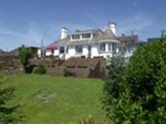

Gwen y Wawr
Gwen y Wawr was built by Eleazar Parry around 1929 and it was designed by the architect Sir Clough Williams-Ellis. Clough Williams-Ellis has left a special legacy of unique buildings in the area, the most famous being the Italianate village of Portmeirion. The house is a unique building facing south, with magnificent views of Cardigan Bay. For a while, the house was owned by Ian Brown of the ‘Stone Roses’.
